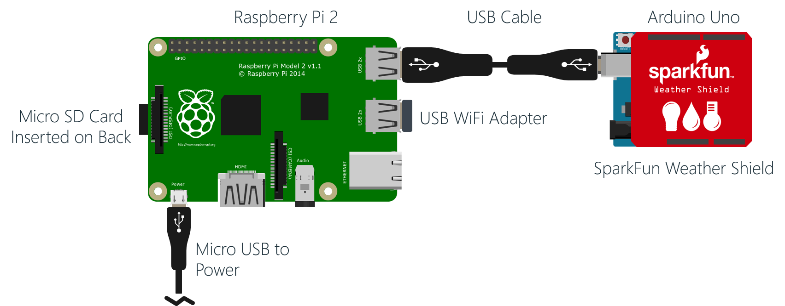

The following should image should show you your approximate configuration
Note: If you don't have the Arduino ready yet, that's ok. You can plug it in later.

Work with your event staff to determine the Raspberry Pi's IP Address
Use an ssh client (You can use PuTTY on Windows) or a Remote Desktop Client (mstsc.exe on Windows) to connect to the IP Address of your Raspberry Pi and login with the credentials:
- Login: pi
- Password: raspberry
The SD Card is configured with the "Raspbian" linux distribution, so the commands that you enter will be linux commands. Start by getting a listing of your home folder by typing ls and pressing enter. Notice the "ctdgtwy" folder name:
ls
The "ctdgtwy is the folder that contains the "GatewayService" deployment. The "GatewayService" is actually a .NET application that is being run on the Raspberry Pi using the Mono open source .NET implementation. If you are interesting in seeing that source code, and how it was deployed, refer to the Original Raspberry Pi Gateway Setup Docs. Here, well just assume it is deployed correctly.
Change into the ctdgtwy/staging folder (ctdgtwy is short for "Connect the Dots Gateway"), do another ls command and notice the (very long named) "Microsoft.ConnectTheDots.GatewayService.exe.config" (whew!) file.
cd ctdgtwy/staging
We need to edit the contents of that file. There are numerous text editors available on linux, and if you have on you prefer, feel free to use it. We will use a simple one called "Nano". Enter the command:
nano Microsoft.ConnectTheDots.GatewayService.exe.config

Use the arrow keys on your keyboard to move down through the file and locate the section that reads:
<AMQPServiceConfig
AMQPSAddress="amqps://[key-name]:[key]@[namespace].servicebus.windows.net"
EventHubName="ehdevices"
EventHubMessageSubject="gtsv"
EventHubDeviceId="a94cd58f-4698-4d6a-b9b5-4e3e0f794618"
EventHubDeviceDisplayName="SensorGatewayService"/>Notice the missing [key-name], [key], and [namespace] placeholders. We need to enter those so that the Raspberry Pi can successfully connect to the "ehdevices" event hub we created previously.
Navigate the portal to find your "ehdevices" event hub, and on the "CONFIGURE" page, and get the "PRIMARY ACCESS KEY for your "D1" "Shared Access Policy".
Before you can use the key though, we need to URL encode it. Go to http://meyerweb.com/eric/tools/dencoder/ to use their URL Encoder / Decoder tool. Paste they key you just copied in, then hit the "Encode" button, then copy the encoded to the clipboard.


Back in your ssh, and nano, use the arrow keys and your key and keyboard to edit the string. Replace the place holders with the values from your Service Bus Namespace & Event Hub:
| Place Holder | Value |
|---|---|
| [key-name] | "D1" (no quotes) |
| [key] | The URL encoded version of the key you just copied. Note that many ssh clients (like PuTTY) will paste whatever is in your clipboard if you right click. So you can delete the place-holder with the keyboard, get the cursor in the right place, then right click to paste the encoded version of the key you copied to the clipboard previously |
| [namespace] | The service bus namespace you created earlier, "ctdhol-ns" in this case |
Finally, to save your changes in Nano, press "Ctrl-X" (Exit), the "Y" to save the changes, and then "ENTER to confirm the original file name. And as long as you didn't make any typos, you should be good to go.
To reboot your Raspberry PI, "DON'T JUST UNPLUG IT!. SHUT IT DOWN NICELY!!!". in your ssh window, run the following command to shut reboot it. If you are using PuTTY you'll see an error about being disconnected, of course that is to be expected:
sudo reboot
When the Raspberry Pi starts back up, you should now be able to go to your website and see sensor values coming in!